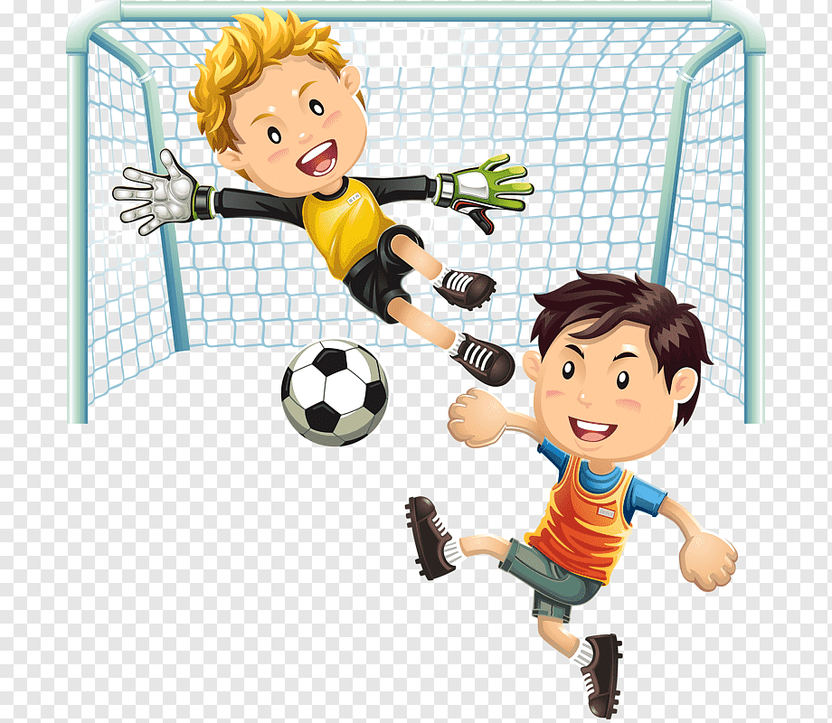
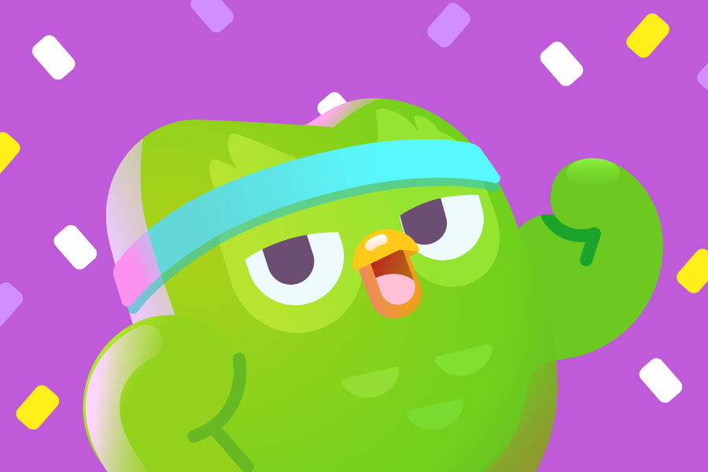

| HOBBY | DESCRIPCIÓN | FRECUENCIA | IMAGEN |
| Jugar Futsal | Me gusta mucho jugar este deporte y casi juego diariamente o casi diario y me gustar parar valones. | Casi Diario |  |
| Ver películas | Disfruto de diferentes géneros pero mas me gustan las peliculas de suspenso y terror tienen buenas historias y son muy interesantes. | Fin de semana | |
| Ir al gimnasio | De vez en cuando voy al jugar boley para aligerar y practicar saltos y desestresarme del estudio. | 2 veces por semana | |
| Escuchar música | La música es mi compañía constante, me inspira y me motiva durante el día. | Todo el tiempo | |
| Jugar juegos online | Me gustar juegos de accion y aventura me ayuda a distraerme y bueno la paso bien con los amigos | Cuando tengo tiempo libre | |
| Jugar y Aprender con Duolingo | Me gustar aprender y practicar ingles con duolingo aparte que estoy en unos curso de ingles los ando practicando con duolingo. | Cada dia |  |